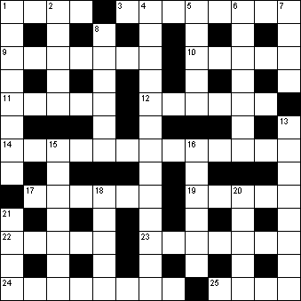

|
|
Daily Quick Crossword
31 January

|
Across 1 Foolhardy (4)3 Surround (8) 9 Capital of Kenya (7) 10 Mistake resulting from inattention (5) 11 Classical language (5) 12 US island state (6) 14 Crane-fly (5-4-4) 17 One taking part in game (6) 19 Perhaps (5) 22 Reasoned thinking (5) 23 Japanese art of paper folding (7) 24 Height, elevation (8) 25 Stick around (4) |
Down 1 Turncoat (8)2 River of Paris (5) 4 Locality (13) 5 Relative by marriage (2-3) 6 Prisoner (7) 7 At all times (4) 8 Beast of burden (6) 13 Harshness of manner (8) 15 Delectation (7) 16 Opening ploy in chess (6) 18 Sailing-boat (5) 20 Organism causing fermentation (5) 21 Parasitic insect (4) |
|
Copyright © 2018 Simply Daily Puzzles
|